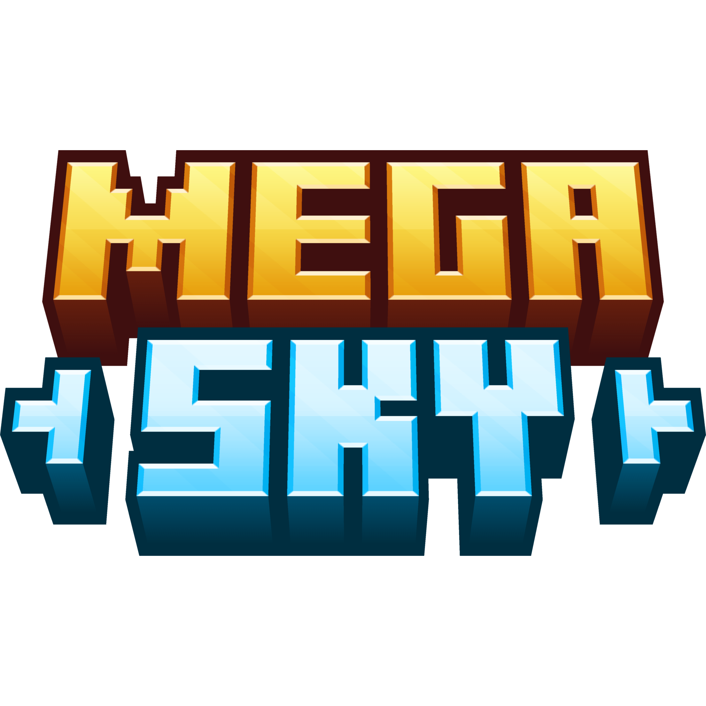

Boa noite, pessoal. Esse é, de fato, o último comunicado Oficial da MegaSky Network, e peço que leiam com calma. [09/02/2026]
Quando reassumi esse projeto depois de ele já ter sido encerrado antes, a intenção era simples: aproximar o servidor da comunidade para dar continuidade ao que sempre foi a essência. Porém, nas últimas semanas, problemas de saúde afetaram diretamente a liderança do projeto, comprometendo totalmente a capacidade de planejamento, organização e execução. Não foi algo pequeno, não foi algo contornável e, principalmente, não era algo que podia ser ignorado sem prejudicar ainda mais o que estava sendo construído.
Diante desse cenário, a situação foi debatida entre todos os responsáveis pela MegaSky e MegaSky Network, e a decisão tomada foi definitiva. O MegaSky Network, como servidor de Minecraft, está sendo oficialmente encerrado. Este espaço deixa de ser um servidor e passa a ser a comunidade geral da MegaSky Corp, onde serão anunciados projetos, iniciativas e novidades das empresas ligadas à marca.
Sabemos que esse projeto já foi finalizado outras vezes no passado e entendemos perfeitamente como isso pode soar para quem está de fora. Mas dessa vez o motivo não é desorganização e nem desinteresse, é uma decisão necessária diante de uma limitação real.
A Network termina aqui. Mas a nossa história só está começando. Obrigado a todos que fizeram parte da Network até hoje e vejo vocês em breve.
Como administrador, reitero a posição do Leonardo e agradecemos ao apoio prestado por todos vocês.
Nós tentamos, fizemos tudo que estava ao nosso alcance, mas infelizmente, a vida para nós resolveu traçar um outro caminho. Não foram momentos genéricos, e pode parecer uma algo pequeno para quem não estava envolvido no projeto.
Não é fácil, não é barato, não é pequeno, não é rápido. São questões além de uma simples decisão de ficar ou permanecer. A minha saúde também ficou extremamente desgastada nas últimas semanas. Alguns lembram, eu já passei por vários diagnósticos de câncer ao longo dos últimos seis anos. A minha saúde é frágil, e que depende de muitos recursos caros, dos quais eu custeio do meu bolso. Fora isso, eu tenho que conciliar uma faculdade, e um emprego de alto risco e alta dedicação.
Não só isso, também pegam questões jurídicas complicadas, envolvendo os registros legais dos projetos, e questões financeiras que não são baratas.
Enfim. Novos ares estão a caminho. E junto deles, novas conquistas. Um carinho grande a todos vocês. ❤️
Por fim, como o representante não só da MegaSky Corporation™, mas como da MegaSky Network™.
Deixo claro que: Não estou nem um pouco feliz com o encerramento do servidor, como a maioria de vocês sabem, isso é meu sonho. Infelizmente não podemos fazer milagres para ludibriar doenças e problemas de saúde. Eu poderia sim assumir o projeto, mas preferi não o fazer, por questões de tempo, e assumir o projeto significaria comprometer outras frentes estratégicas da MegaSky.
A história da MegaSky ainda não se encerrou, continuaremos com as atividades da Corporation, e, ano que vem, começaremos as atividades da MegaSky Industries. Nós temos grandes planos para o mercado de hardware, e, em breve, se continuarem conosco nessa jornada, vocês terão vários spoilers do que vem por aí. Se tudo ocorrer bem, a MegaSky Industries conta com vocês na CES 2028.
No mais queria agradecer à nossa querida equipe, que mesmo com altos e baixos, continuaram dispostos a trabalhar.
Leonardo: Pelo tempo dedicado e as decisões tomadas, não só como CEO, mas como ex-administrador.
Henrique: Pelo apoio ao servidor e pelas decisões em conjunto ao CEO.
R31V4G0D: Pelas builds incríveis que fez, e principalmente pela dedicação ao servidor, mesmo com tantas responsabilidades.
Gio: Pelos designs incríveis que fez ao servidor.
Lord: Pelos eventos que nossa comunidade tanto amou, pelas rádios que fizemos juntos, por toda a administração da Out-Game.
E por fim, mas não menos importante: Obrigado a vocês, comunidade MegaSky Network. Sem vocês, nunca poderia ter feito nada disso, vocês nos acompanharam até o fim, e espero que estejam conosco nessa nova fase da MegaSky. Talvez não como consumidores, mas como entusiastas dos nossos produtos.
A Network se encerra aqui, mas um futuro nasce no mesmo lugar, então um brinde aos novos tempos! 🍸
Entre no servidor do Discord e fique por dentro de tudo: https://discord.gg/wcMWVa5TBF